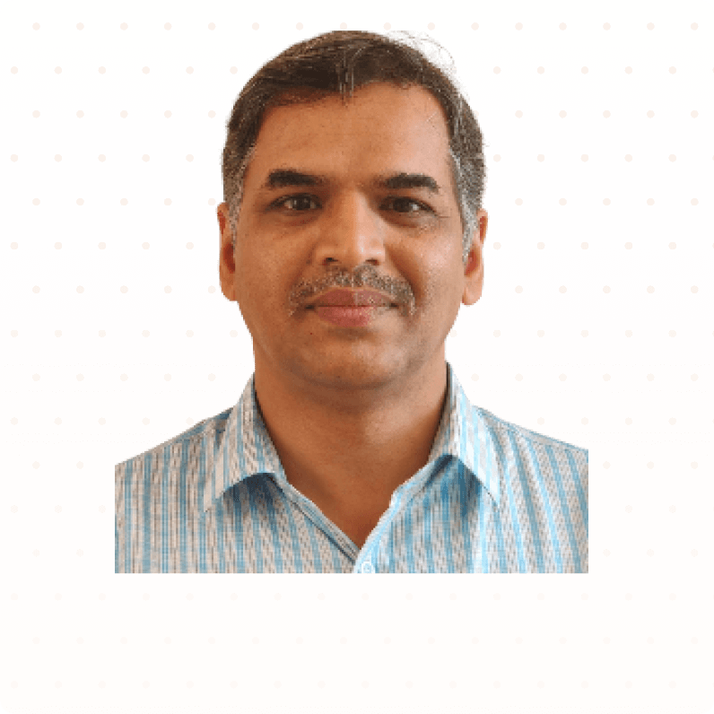

25+ years building embedded systems that matter — from fighter jet test benches to AI-powered senior health monitors.
At KuboCare, I lead hardware design for privacy-first, radar-based ambient health monitoring systems that protect seniors 24/7 — without wearables or cameras. Our millimeter-wave radar operates at just 1-10 mW (less than 1% of Wi-Fi power), delivering contactless vital sign tracking, fall detection, and sleep monitoring with FDA/FCC-approved components.
Real-time fall detection with gait analysis, pre-fall alerts, and context classification to minimize false alarms.
Non-contact heart rate and respiratory rate tracking through ambient radar sensing.
Bed entry/exit monitoring, REM/deep/light sleep stages, toss-and-turn tracking, and restless night detection.
Daily rhythm mapping, behavior shift detection, and inactivity flagging for proactive care.
Air quality index, temperature, humidity, and light exposure tracking for optimal living conditions.
Built-in microphone and speaker enabling direct audio communication between seniors and caregivers.
From the cockpit of HAL's Tejas to hospital operating rooms, from Bangalore metro stations to German exhibition halls.
Radar-based AI health monitoring at KuboCare (contactless vital signs, fall detection, sleep tracking for seniors) and radar sleep monitoring hardware for REM42, a DuroFlex-incubated AI sleep tech startup.
HAL LCA Tejas flight control test bench, GTRE Kaveri engine simulation, NAL data acquisition, ADA signal filters.
CPAP respiratory ventilation, Stempeutron stem cell isolation, colposcopy illumination ring.
SCAD strain measurement product line (4 to 256 channels), shearography phase shifters, LabVIEW automation.
ARM mbed Thunderboard Wear reference design, GPS/GPRS package shock loggers, UWB smart shelf systems.
Architecture for India's largest telematics hardware manufacturer — GPS tracking and fleet management.
Freshot Robotics' viral Idli ATM — fully automated cooking and vending deployed at Bangalore metro.
PLC control for cement plants, Modbus GSM alerting, LabVIEW-based lab digitization frameworks.
IC evaluation platforms (Blaze, LiveBench) for Tenxer Technologies — rapid semiconductor characterization.
Connected lighting with Human Centric Lighting control (Circadian rhythm tuning), burn-in test automation, and goniophotometry at SupraEnergy (2018–2024).
EV motor drive, motor test jig, CAN-based IoT logger, CAN isolator, rotary position sensor integration, and CE/RE compliance testing at Amberroot Systems.
Testing automation for solenoid coil manufacturing and customer technical support at I-Max.
Over two decades of building, shipping, and leading embedded products — each chapter brought deeper expertise and bigger challenges.
Products designed, built, and shipped — from concept to production.
Leading hardware design for millimeter-wave radar devices that contactlessly monitor vital signs, detect falls, and track sleep for seniors in living facilities.
Developed contactless radar hardware for REM42 — a DuroFlex-incubated AI sleep tech startup. The device enables non-contact detection of sleep stages, vital signs, and movement patterns for comprehensive sleep health insights without wearables.
8-channel system expandable to 256 channels with LabVIEW front-end. Won the Technology Development Board Award for Successful Indigenization (2013).
Stand-alone test facility for control stick qualification on India's Light Combat Aircraft. PC104-based with touch screen, LVDT/RVDT data acquisition.
ARM mbed wearable reference design board with EFM32 Giant Gecko, BLE connectivity, 9-axis IMU, and heart rate sensor. Full HW design + firmware.
Automated medical device for isolating stromal vascular fraction (SVF) cells from fat tissue at point-of-care, for Stempeutics Research (Manipal/Cipla).
Fully automated cooking and vending machine for South Indian breakfast. Went viral at Bangalore metro stations. 72 idlis per cycle, QR ordering, contactless.
EV motor drive development, motor test jig, CAN-based IoT data logger, CAN isolator integration, rotary position sensor, and EV drive compliance testing for CE and RE certification standards.
Automated testing system for solenoid coil manufacturing. Customer interaction on technical queries and solutions for industrial solenoid applications.
Designed IoT-connected lighting with Human Centric Lighting control — Circadian rhythm-based color temperature auto-tuning. Built burn-in test automation (power, lux, endurance) and a goniophotometer for angular light intensity measurement.
4-channel strain measurement system for BHEL and BARC. The only Indian-designed instrument exhibited at a prestigious German measurement exhibition.
Hydraulic servo valve simulation module for the Kaveri turbofan engine development program. 5-channel simulation of different servo valves.
Awarded for Successful Indigenization of the SCAD 508 eight-channel strain measurement system. Recognized for designing and manufacturing world-class test instrumentation entirely in India. Prize: Rs. 5 Lakhs + Trophy.
The SCAD 500 strain measurement system was the only Indian-designed instrument showcased alongside established global manufacturers at a prestigious international exhibition in Germany, earning widespread appreciation from the global engineering community.
Open to consulting engagements, technical advisory roles, and collaboration on embedded systems challenges.